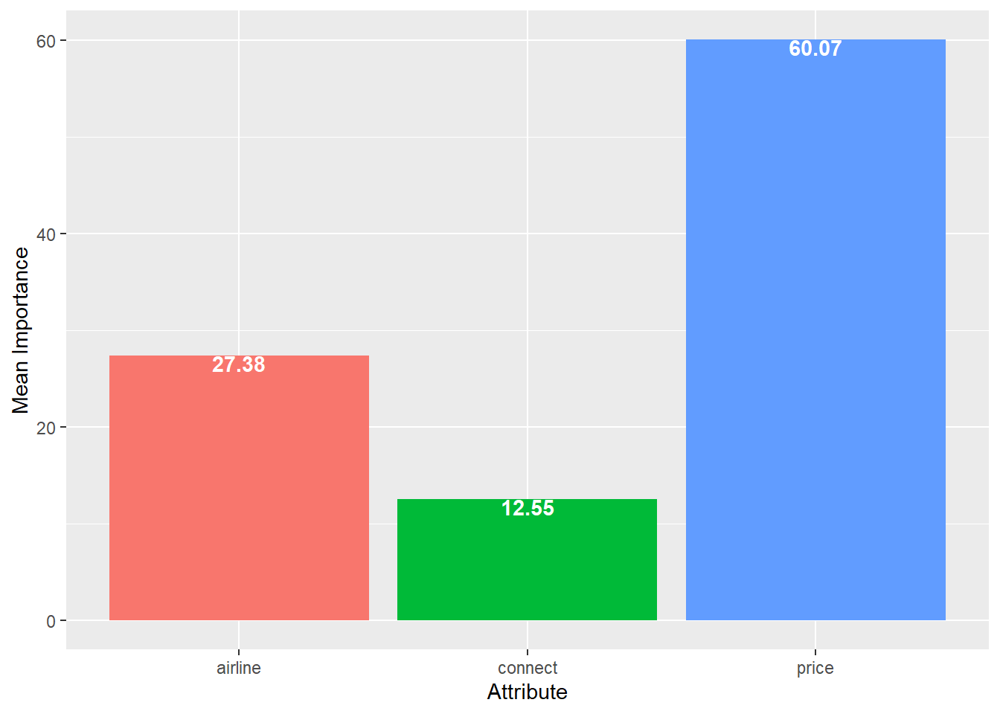

Chapter 12 Conjoint Analysis (Not Covered)
Data for this chapter:
The
airlinecadata is used from theMKT4320BGSUcourse package. Load the package and use thedata()function to load the data.
12.1 Introduction
Base R does not have any built in function to handle conjoint analysis, because conjoint analysis can be done in a variety of ways. For this tutorial, the focus is on traditional conjoint using linear regression based methods. To accomplish the conjoint analysis, I have written a three user defined functions to help with getting the necessary results for traditional conjoint.
tradcaproduces overal part-worth plots for each attribute, and importance plot, and a table with case-level part-worths and importancescademoproduces correlation matrices and importance regressions from a dataframe of case-level part-worths/importances that has been appended with demographicscapred.compares two profiles specified by the user
12.2 tradca User Defined Function
- Usage:
tradca(formula, data, idvar="")formulais an object with a saved formula. The formula is represented by a DV on the left side separated from the IVs on the right side by a tilde(~). For traditional conjoint, the DV is the value rating for each profile, while the IVs are the name of the attribute variables. For example:caform = value ~ attr1 + attr2 + attr3
datais the name of the dataframe with the value ratings for each profileidvaris the variable that identifies the case (in quotes)
- When saved to an object, this function will return three things:
pwplotcontains a plot with average part-worth values for each attributeimpplotcontains a plot with the average importancescasetablecontains a dataframe with the part-worths and importances for each case
- NOTE: This function requires the following packages:
broomdplyrstringrggplot2
# Load necessary packages
library(broom)
library(dplyr)
library(stringr)
library(ggplot2)
# Saving formula to object
caform <- value ~ airline + connect + price
# Using fucntion and saving to object called 'results'
results <- tradca(formula = caform, # Formula object created above
data = airlineca, # Data frame with profile ratings
idvar="caseid") # Case id variable
results$pwplot # Get part worth plot

12.3 cademo User Defined Function
- Usage:
cademo(formula, data, vars="")formulais the saved formula object from beforedatais the name of the dataframe with case-level part-worths and importances, along with the appended demographic variables (see Preparation below)varsis a list of the demographic variable names
- When run, this function will return correlation matrices and importance regressions depending on the type of demographic variable
- NOTE: This function requires the
Hmiscpackage
12.3.1 Preparation
- To use this function, the
casetablefrom the call to thetradcafunction must be appended with the demographic variables for each case. To do this, use the following code:
demos <- airlineca %>% # Create new dataframe called 'demos' based on original data
group_by(caseid) %>% # Group by the 'idvar'
summarise(inc=first(inc), # Capture the demographic variables
type=first(type)) %>%
bind_cols(.,results$casetable[,2:ncol(results$casetable)])
# NOTE: This last command appends the demographic variables 'casetable' dataframe 12.3.2 Function usage
cademo(caform, # Formula object from before
demos, # Dataframe created above
c("inc", "type")) # Names of the demographic variables
Correlation Matrix for airline_
inc
airline_1: Delta 0.36*
airline_2: Spirit 0.17
airline_3: SW 0.36*
Correlation Matrix for connect_
inc
connect_1: None -0.01
connect_2: One 0.20
Correlation Matrix for price_
inc
price_1: $300 -0.35*
price_2: $450 -0.17
price_3: $600 -0.09
Correlation Matrix for Imp
inc
Imp_airline 0.47*
Imp_connect 0.17
Imp_price -0.48*
Regression Results for Imp_airline
Estimate Std. Error t value Pr(>|t|)
(Intercept) 10.1131 7.5592 1.3379 0.1891
inc 0.3325 0.0946 3.5161 0.0012
typePleasure -9.4936 5.3744 -1.7664 0.0856
Regression Results for Imp_connect
Estimate Std. Error t value Pr(>|t|)
(Intercept) 10.2144 5.3877 1.8959 0.0658
inc 0.0787 0.0674 1.1672 0.2506
typePleasure -5.0497 3.8305 -1.3183 0.1955
Regression Results for Imp_price
Estimate Std. Error t value Pr(>|t|)
(Intercept) 79.6701 8.7485 9.1068 0.0000
inc -0.4111 0.1094 -3.7567 0.0006
typePleasure 14.5439 6.2200 2.3382 0.024912.4 capred User Defined Function
- Usage:
cademo(formula, data, prof1, prof2)formulais the saved formula object from beforedatais the name of the dataframe with case-level part-worths and importances; this is thecasetableobject from the original call to thetradcafunctionprof1is the first profile (see Preparation below)prof2is the second profile (see Preparation below)
- When run, this function will return correlation matrices and importance regressions depending on the type of demographic variable
12.4.1 Preparation
- To use this function, it works best to create the profiles by saving them to separate objects. The attribute levels for the profiles should be in the form of:
attribute_levelnumber.- For example, for the first Delta is the first level of the
airlineattribute, so we would useairline_1to indicate that level of that attribute
- For example, for the first Delta is the first level of the
12.4.2 Function usage
capred(caform, # Formula object from before
results$casetable, # Dataframe from original 'tradca' call
prof1, prof2) # Names of our profile objects
Profile 1 = airline_1: Delta / connect_2: One / price_3: $600
Mean Utility = 26.382
95% CI = (18.107,34.657)
Profile 2 = airline_3: SW / connect_2: One / price_2: $450
Mean Utility = 51.933
95% CI = (42.208,61.658)